MR-VMU-Tropic Hardware Architecture and Reference Design¶
The MR-VMU-Tropic is the flight-controller (vehicle management unit) reference design of the NXP Mobile Robotics family. It is a PX4 / NuttX autopilot built around an NXP i.MX RT1064 crossover MCU, providing the real-time flight-control and I/O functions of a drone or mobile robot. This application note describes the system hardware architecture, the main functional subsystems, and the hardware integration considerations for engineers designing the MR-VMU-Tropic into a product.
This document is hardware focused. It describes the architecture and the role of each subsystem rather than the pin-level connector detail. For connector pinouts, net names, and i.MX RT1064 pad assignments, see the MR-VMU-Tropic hardware reference. The flight-stack bring-up and configuration are covered in the MR-VMU-Tropic flight stack documentation and the NXP Robotic Platforms SDK documentation.

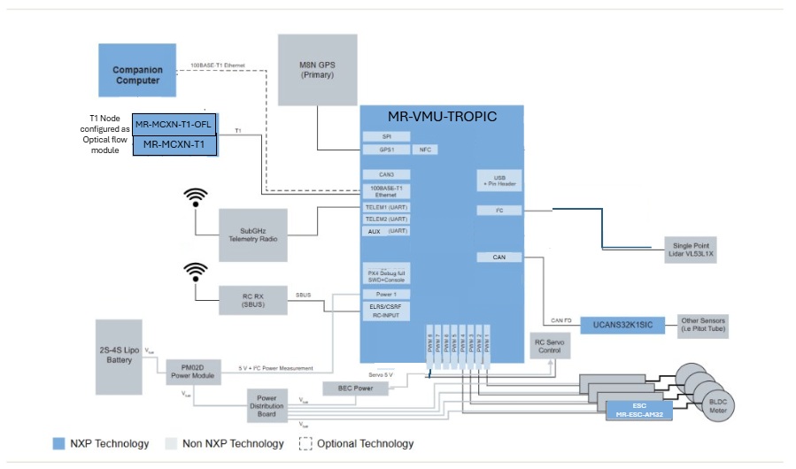
Figure 1. Typical small drone system using MR-VMU-Tropic
1. Introduction¶
The MR-VMU-Tropic integrates the processing, sensing, power, and I/O required for autonomous flight and motion control onto a single compact flight controller. It is intended as a validated starting point that customers evaluate, reproduce, and adapt for their own vehicles.
The board is organized around the i.MX RT1064 crossover MCU, which runs the PX4 flight stack on the NuttX RTOS and drives the motor outputs, sensor interfaces, and communication links of the vehicle. The connector set follows established drone-ecosystem standards so that standard cabling and peripherals fit.
2. System hardware architecture¶
The functional block diagram below shows how the i.MX RT1064 MCU connects to the sensor suite, power stage, communication links, and motor outputs.

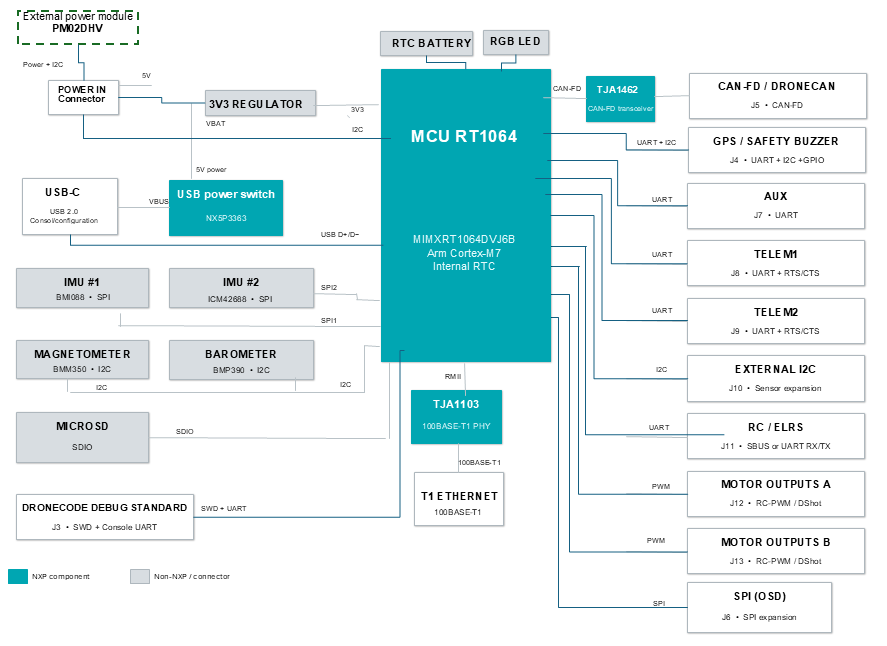
Figure 2. MR-VMU-Tropic functional block diagram
At the system level the design is partitioned into:
Processing core: the i.MX RT1064 crossover MCU running the flight stack.
Power: the wide-range input stage based on the NXP PM02DHV power module and the regulated rails derived from it.
Sensing: the redundant inertial sensors, magnetometer, and barometer used for state estimation.
Communication: CAN-FD / DroneCAN, 100BASE-T1 automotive Ethernet, UART telemetry, GPS and safety, and RC / ELRS inputs.
Actuation: the RC-PWM / DShot motor outputs and the SPI OSD expansion.
Each subsystem is described in the following sections. The physical connector that carries each interface, together with its pinout, is listed in the hardware reference; it is not repeated here.
3. Processing core¶
The processing core is the NXP i.MX RT1064, a crossover MCU based on an Arm Cortex-M7 core with integrated flash and an on-chip real-time clock. It runs the PX4 flight stack on the NuttX RTOS and performs the deterministic sensor fusion, state estimation, and control-loop execution required for flight and motion control. Programming and debug use the Dronecode debug connector; a USB-C port provides the console. The connector pinouts are listed in the hardware reference.
4. Power¶
The board is powered from a wide input range suitable for typical robotics batteries through the NXP PM02DHV or compatible power module, which outputs a regulated 5 V and also provides battery voltage and current sensing to the flight controller over an I2C interface. The measured power covers all devices attached to and passing through the PM02DHV, including the motors.
The Tropic on-board regulators then derive the 3.3 V and other rails required by the MCU and the connected peripherals. In addition to the power-module input, the board can run from USB during bench work. An NX5P3363UKZ USB power-distribution switch allows cost-effective coexistence of 5 V power from both USB and the power input connector.
Warning: Every 5 V connector pin other than the power input is an output. Power the board through the power-module connector or USB only; never feed power into a 5 V output pin.

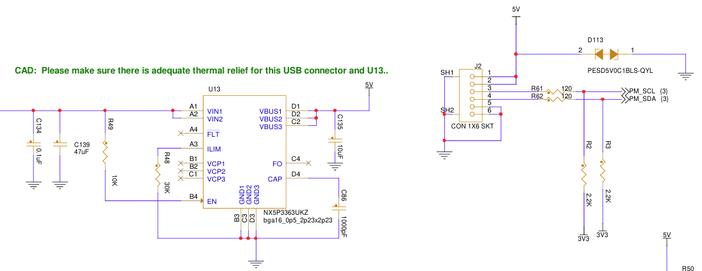
Figure 3. PX4 power input connector J2 and the U13 USB PD switch allowing dual input sources
Input limits, protection behavior, and regulator ratings must be confirmed against the released schematic for the board revision in use.
5. Sensing¶
The board carries a redundant set of inertial sensors, a magnetometer, and a barometric pressure sensor for attitude, heading, and altitude estimation. The redundancy supports the integrity requirements of a flight controller.
Note: The barometric pressure sensor may be either a Bosch BMP390 or a Bosch BMP388, depending on component availability at manufacturing time. The BMP388 is a drop-in, functionally equivalent replacement, and the software supports both components. No user action is required regardless of which part is fitted.

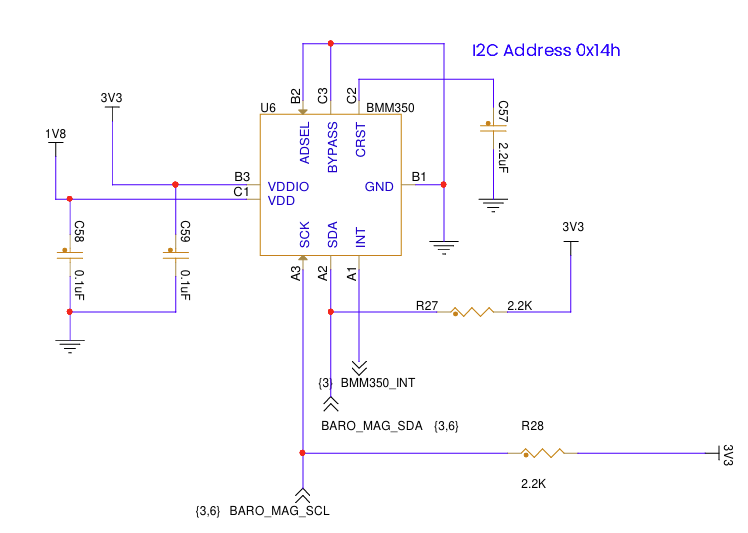
Figure 4. BMM350 magnetometer on I2C address 0x14

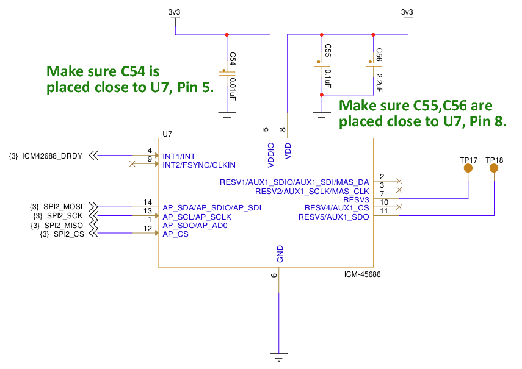
Figure 5. TDK InvenSense ICM-45686 6-axis accelerometer and gyroscope on SPI2 with DRDY interrupt

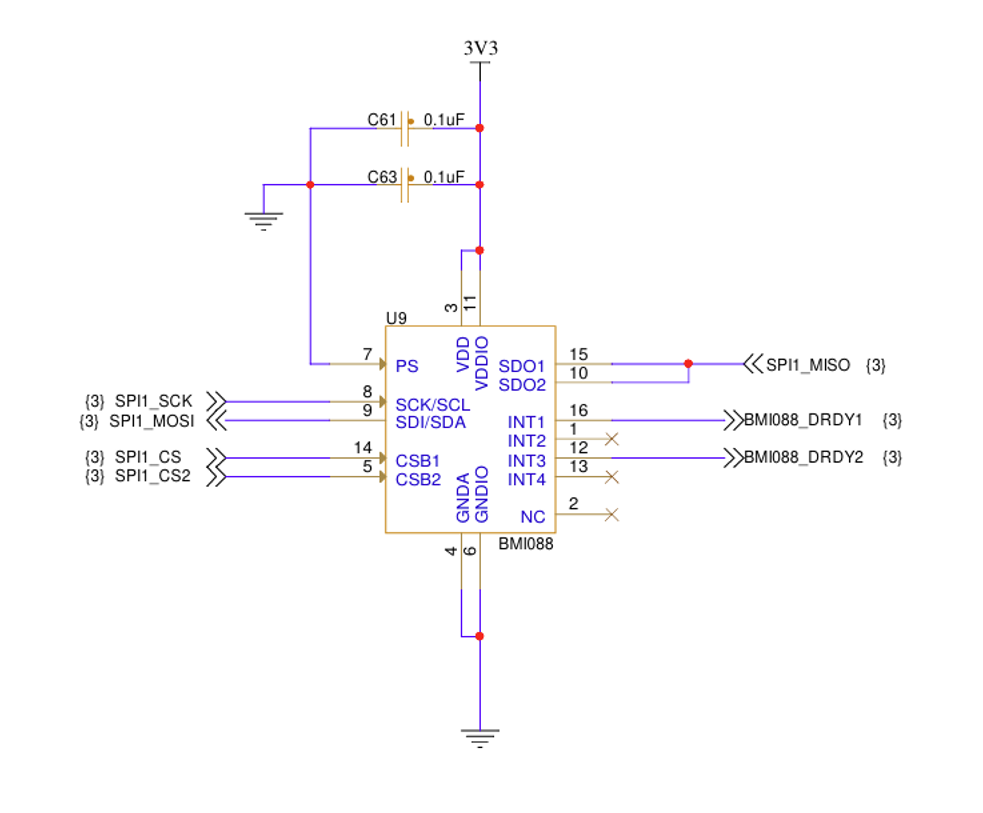
Figure 6. Bosch BMI088 6-axis accelerometer and gyroscope on SPI1 with dual DRDY interrupts

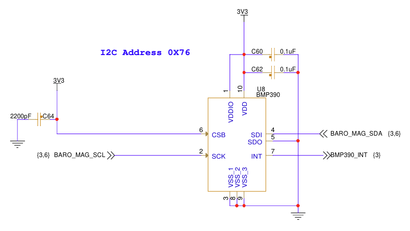
Figure 7. Bosch BMP390 barometric pressure sensor (altimeter) at I2C address 0x76
6. Communication interfaces¶
The MR-VMU-Tropic provides the communication links a vehicle management unit needs:
CAN-FD / DroneCAN through an NXP TJA1462 transceiver, for distributed peripherals such as GPS, power, and smart ESCs.
100BASE-T1 automotive Ethernet through an NXP TJA1103 PHY, connecting the flight controller to the wider time-sensitive-networking fabric.
Dronecode-compliant standard dual UART telemetry links, SPI, I2C, a Debug full interface, and a GPS and safety-switch port with arming, buzzer, and remote LED control.
Bidirectional RC / ELRS port, with the pinout to be validated for specific radio-control and telemetry radios.
An additional AUX UART following the pinout standard but without flow control.
An on-board RGB LED for signalling status, as defined in PX4 and other flight stacks.
Where possible and defined, connectors follow the Dronecode DS-009 connector standard. This means the majority of standard drone peripherals attach without adjustment. New devices should be checked beforehand, however, since they may use a non-standard pinout. The connector set and pin order are documented in the hardware reference.
CAN-FD¶
The CAN-FD interface is provided using an NXP TJA1462 CAN SIC (Signal Improvement Capability) transceiver. Its active signal-improvement function suppresses reflections and ringing, making the network more tolerant of stubs and non-ideal termination while supporting larger, more flexible topologies. This includes a centrally terminated star topology, which can simplify cabling to distributed nodes such as ESCs in a drone.
Note that the Tropic does populate termination resistors by default.

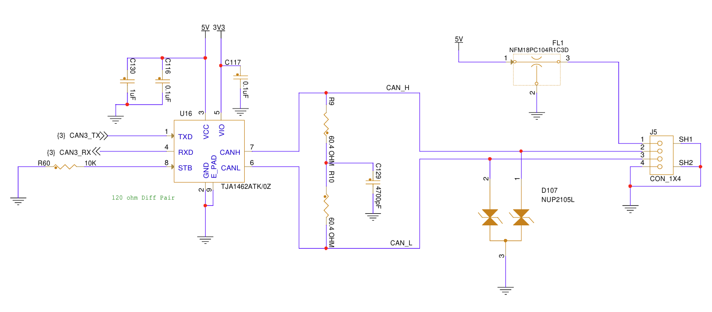
Figure 8. CAN-FD featuring a CAN-SIC signal-improvement PHY
100BASE-T1 Ethernet¶
The MR-VMU-Tropic provides a 100 Mbit/s 100BASE-T1 Ethernet interface using the NXP TJA1103 automotive Ethernet PHY. 100BASE-T1 carries bidirectional Ethernet traffic over a single twisted pair, providing a compact, high-speed network connection well suited to drones and other mobile robots. The TJA1103 supports 100 Mbit/s transmit and receive operation over unshielded twisted-pair cabling (TJA1103 data sheet).
Unlike conventional 100BASE-TX Ethernet, 100BASE-T1 does not require Ethernet isolation magnetics. The interface can instead use a small passive filtering, coupling, and protection network. This reduces component size and weight, making the interface particularly attractive in a drone where cable mass, connector size, and PCB area are important system considerations.
The T1 differential pair has a defined polarity, so the cabling and connectors should preserve the TRX positive and negative orientation. However, the TJA1103 provides polarity detection and correction, allowing the PHY to compensate for an accidentally reversed pair when that feature is enabled.
The board also provides status LEDs associated with the T1 interface for convenient visual indication of network state and traffic.
This section follows the standard TJA1103 reference design and datasheet guidance.

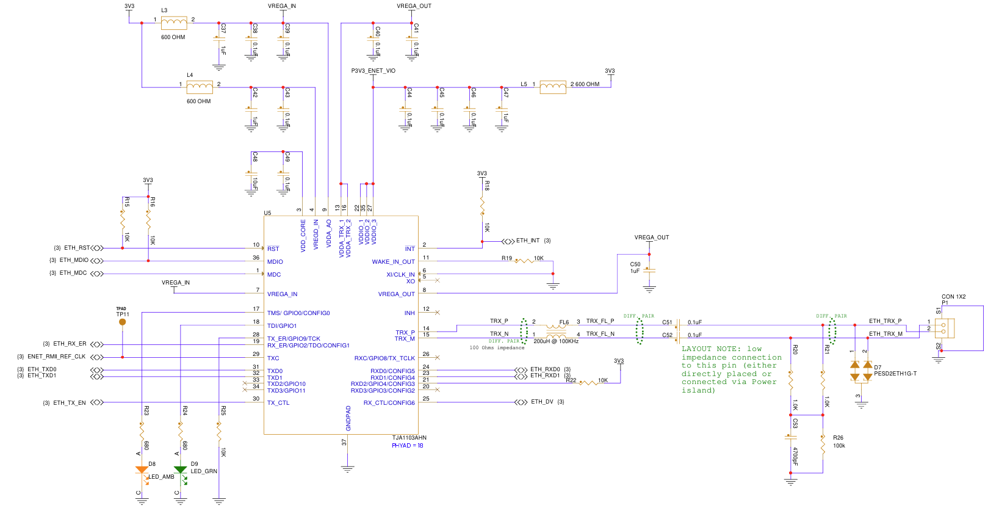
Figure 9. 100BASE-T1 two-wire Ethernet using the TJA1103
RC / ELRS port¶
The MR-VMU-Tropic provides a dedicated RC / ELRS interface for connecting a radio-control receiver. The interface supports both a conventional SBUS receiver input and a UART RX/TX connection suitable for ExpressLRS (ELRS) receivers using the CRSF protocol.
A simple SBUS receiver requires only power, ground, and a single signal from the receiver to the flight controller. The 5 V supply is provided through a resettable fuse to avoid the possibility that a shorted receiver could impact the rest of the board.
A typical connection is therefore:
Receiver |
MR-VMU-Tropic |
|---|---|
5 V |
5 V |
GND |
GND |
SBUS OUT |
UART RX |
An ELRS receiver normally uses CRSF over a UART and therefore uses both RX and TX. The receiver’s TX carries RC commands to the flight controller, while its RX accepts telemetry from the flight controller for transmission back over the ELRS radio link. ExpressLRS documentation specifies this crossed UART connection explicitly.
ELRS receiver |
MR-VMU-Tropic |
|---|---|
VCC |
5 V |
GND |
GND |
TX |
UART RX |
RX |
UART TX |
This makes the ELRS connection bidirectional: RC commands travel from the operator to the flight controller, while telemetry such as vehicle and link information can travel back through the receiver to the operator.
Validate this pinout with the particular remote controller or transceiver used in the application.

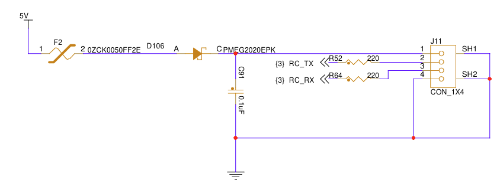
Figure 10. RC / ELRS connector and interface details
On-screen display (OSD)¶
The MR-VMU-Tropic provides an SPI interface on connector J6 for connection to an external OSD device. In a typical analog FPV system, this can be a MAX7456-class video-overlay device controlled by the flight controller over SPI. The OSD device is inserted into the video path between the FPV camera and video transmitter and overlays flight information such as battery status, flight mode, altitude, navigation information, and warnings onto the pilot’s video. The video signal itself does not pass through the MR-VMU-Tropic.

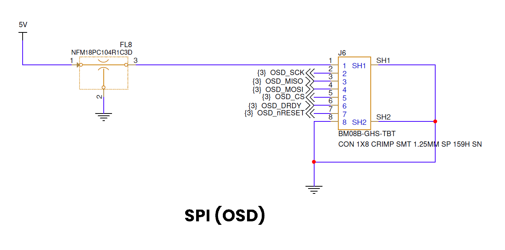
Figure 11. SPI typically used for on-screen display
7. Actuation (PWM)¶
Motor commands are driven out of the two ESC headers, which follow the Betaflight ESC connector standard so that a four-in-one ESC with a standard cable fits. The outputs support both RC-PWM and DShot motor-control protocols.
8. Hardware integration and bring-up¶
Confirm the board part number and revision.
Confirm the input supply range and polarity against the released schematic before applying power.
Verify connector orientation and mating; the connector pinouts are in the hardware reference.
Bring the board up using a current-limited supply, and verify the expected rails before connecting it to the vehicle.
Observe electrostatic-discharge precautions and provide mechanical support and strain relief appropriate to the installation.
Flight-stack bring-up and configuration are covered in the MR-VMU-Tropic flight stack documentation.
9. Schematic, board layout, and bill of materials¶
This application note provides a system-level hardware overview and should be used together with the released design files. Electrical limits, connector pin assignments, signal direction, power-domain relationships, and assembly options must be confirmed against the released schematic and bill of materials for the applicable board revision.
10. Abbreviations¶
Acronym |
Description |
|---|---|
CAN FD |
Controller Area Network Flexible Data-rate |
CRSF |
Crossfire (ELRS serial protocol) |
DShot |
Digital Shot (digital ESC control protocol) |
ELRS |
ExpressLRS (radio-control link) |
ESC |
Electronic speed controller |
FMU |
Flight management unit |
GNSS |
Global Navigation Satellite System |
MCU |
Microcontroller unit |
OSD |
On-screen display |
PHY |
Physical-layer transceiver |
PWM |
Pulse-width modulation |
RC |
Radio control |
RTC |
Real-time clock |
RTOS |
Real-time operating system |
SBUS |
Serial bus (radio-control receiver protocol) |
SPI |
Serial Peripheral Interface |
UART |
Universal asynchronous receiver-transmitter |
USB |
Universal Serial Bus |
VMU |
Vehicle management unit |
11. References¶
MR-VMU-Tropic hardware reference — connectors, pinouts, and i.MX RT1064 pad assignments
MR-VMU-Tropic flight stack documentation — flight-stack bring-up and configuration
NXP TJA1103 data sheet — 100BASE-T1 automotive Ethernet PHY
MR-VMU-TROPIC repository — schematics, board layout, and bill of materials